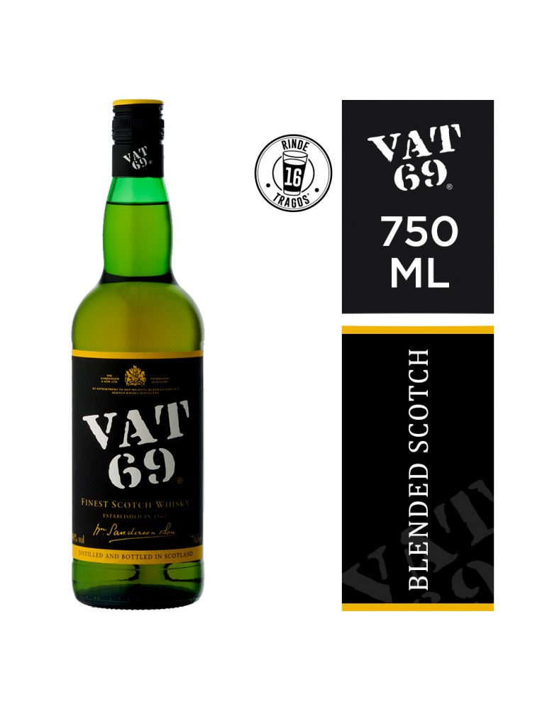
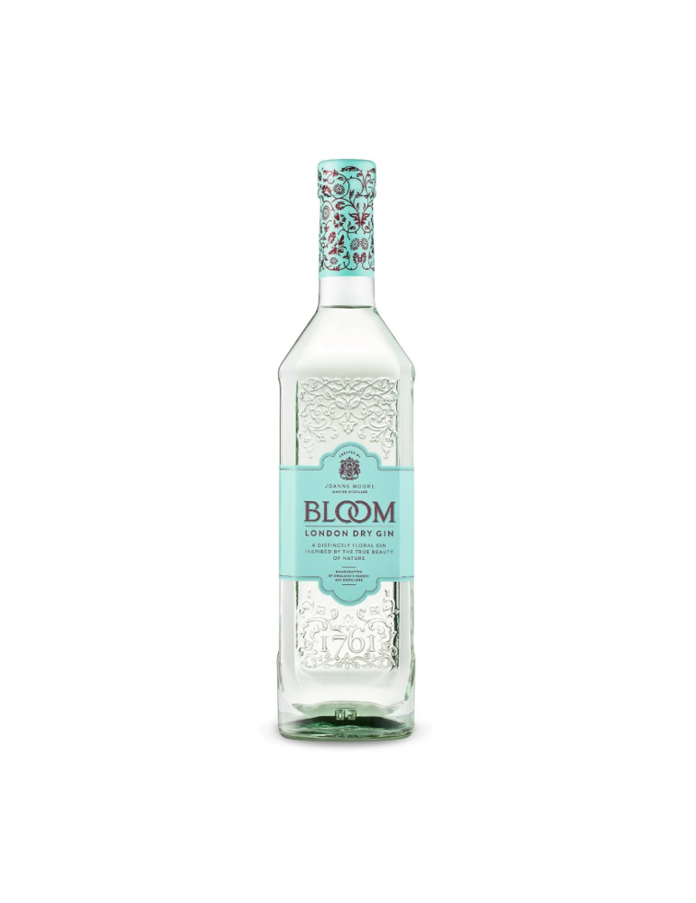
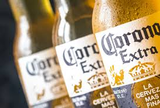

Tipos para Licores
Licores de Hiervas
Su volumen de alcohol es como mínimo de un 35%, según el tipo de aguardiente, y se obtiene por destilación.

Licores de Frutas
Este licor puede ser elaborado con cualquier tipo de fruta. es usado para hacer cócteles por su baja graduación alcohólica que no suele superar los 20°.
Crema de licor
La crema de licro tiene un promedio entre 12 y 18 grados.

Gin Williams Elegant
Grados de alcohol 48º Para ello se utiliza un aguardiente base a partir de las famosas manzanas cultivadas de manera ecológica en Herefordshire, destilado dos veces en un alambique con columna de cobre.

Bloom London Dry Gin 750ml
Contenido de alcohol: 40%

Cerveza Corona
Alcohol por volumen: 4.0%, 90 calorías, 2.6 gramos de carbohidratos, 0.7 gramos de proteínas, 0 gramos de grasa.
